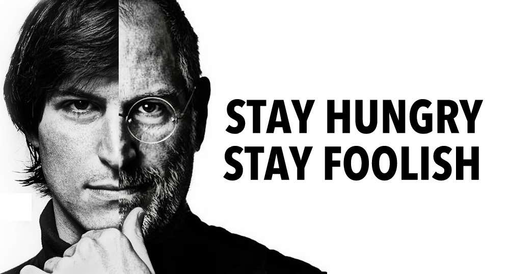

Steven Paul Jobs(/dʒɒbz/; February 24, 1955 – October 5, 2011) was an American business magnate and investor. He was the chairman, chief executive officer (CEO), and co-founder of Apple Inc.; chairman and majority shareholder of Pixar; a member of The Walt Disney Company's board of directors following its acquisition of Pixar; and the founder, chairman, and CEO of NeXT. Jobs is widely recognized as a pioneer of the microcomputer revolution of the 1970s and 1980s, along with Apple co-founder Steve Wozniak. Jobs was born in San Francisco, California, and put up for adoption. He was raised in the San Francisco Bay Area. He attended Reed College in 1972 before dropping out that same year, and traveled through India in 1974 seeking enlightenment and studying Zen Buddhism. His declassified FBI report states that he used marijuana and LSD while he was in college, and once told a reporter that taking LSD was "one of the two or three most important things" he had done in his life. Jobs and Wozniak co-founded Apple in 1976 to sell Wozniak's Apple I personal computer. Together the duo gained fame and wealth a year later for the Apple II, one of the first highly successful mass-produced personal computers. Jobs saw the commercial potential of the Xerox Alto in 1979, which was mouse-driven and had a graphical user interface (GUI). This led to development of the unsuccessful Apple Lisa in 1983, followed by the breakthrough Macintosh in 1984, the first mass-produced computer with a GUI. The Macintosh introduced the desktop publishing industry in 1985 with the addition of the Apple LaserWriter, the first laser printer to feature vector graphics. Jobs was forced out of Apple in 1985 after a long power struggle with the company's board and its then-CEO John Sculley. That same year, Jobs took a few of Apple's members with him to found NeXT, a computer platform development company that specialized in computers for higher-education and business markets. In addition, he helped to develop the visual effects industry when he funded the computer graphics division of George Lucas's Lucasfilm in 1986. The new company was Pixar, which produced Toy Story, the first fully computer-animated film. Apple merged with NeXT in 1997, and Jobs became CEO of his former company within a few months. He was largely responsible for helping revive Apple, which had been at the verge of bankruptcy. He worked closely with designer Jony Ive to develop a line of products that had larger cultural ramifications, beginning in 1997 with the "Think different" advertising campaign and leading to the iMac, iTunes, iTunes Store, Apple Store, iPod, iPhone, App Store, and the iPad. In 2001, the original Mac OS was replaced with a completely new Mac OS X, based on NeXT's NeXTSTEP platform, giving the OS a modern Unix-based foundation for the first time. Jobs was diagnosed with a pancreatic neuroendocrine tumor in 2003. He died of respiratory arrest related to the tumor at age 56 on October 5, 2011.